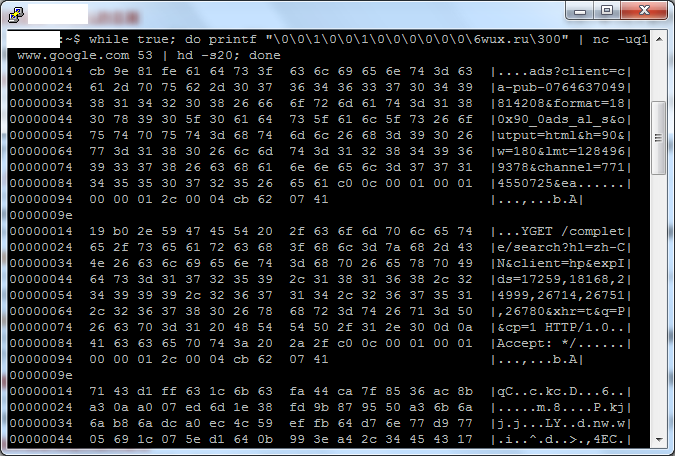

Author: Anonymous
Date: Sunday, March 08, 2020
Credits: GFW Report did not contribute in any step of this work. All credits goes to gfwrev.
中文版： GFW考古：gfw-looking-glass.sh
This report first appeared on GFW Report. We also maintain an up-to-date copy of the report on both net4people and ntc.party.
I came across a one-liner script by @gfwrev and got seriously impressed by it. Although it does not work anymore, I still would like to have a writeup on it for its beauty and for the author’s creativity.
The one-liner named gfw-looking-glass.sh is as follows:
while true; do printf "\0\0\1\0\0\1\0\0\0\0\0\0\6wux.ru\300" | nc -uq1 $SOME_IP 53 | hd -s20; done
As shown in the figure below, it was able to print out part of the memory of the GFW. But how?

nc
nc -uq1 $SOME_IP 53 sends input from stdin to the port 53 of $SOME_IP as a UDP packet. As explained by @gfwrev, $SOME_IP can be any host that 1) does not response to DNS query on port 53 and 2) is on the other side of the GFW (meaning if the query is sent from China, $SOME_IP should be outside of China). Requirement 1 makes sure any response was from the GFW, rather than the destination host; while requirement 2 makes sure the well-crafted DNS query would be seen by the GFW.
Background
A little bit background on DNS format and DNS compression pointer can be very helpful to understand this exploitation.
General DNS Format
Below is the general format of DNS queries and responses:
0 1 2 3
0 1 2 3 4 5 6 7 8 9 0 1 2 3 4 5 6 7 8 9 0 1 2 3 4 5 6 7 8 9 0 1
+-+-+-+-+-+-+-+-+-+-+-+-+-+-+-+-+-+-+-+-+-+-+-+-+-+-+-+-+-+-+-+-+
| Identification | flags |
+-+-+-+-+-+-+-+-+-+-+-+-+-+-+-+-+-+-+-+-+-+-+-+-+-+-+-+-+-+-+-+-+
| number of questions | number of answer RRs |
+-+-+-+-+-+-+-+-+-+-+-+-+-+-+-+-+-+-+-+-+-+-+-+-+-+-+-+-+-+-+-+-+
| number of authority RRs | number of additional RRs |
+-+-+-+-+-+-+-+-+-+-+-+-+-+-+-+-+-+-+-+-+-+-+-+-+-+-+-+-+-+-+-+-+
| questions |
+-+-+-+-+-+-+-+-+-+-+-+-+-+-+-+-+-+-+-+-+-+-+-+-+-+-+-+-+-+-+-+-+
| answers(varaible number of RRs) |
+-+-+-+-+-+-+-+-+-+-+-+-+-+-+-+-+-+-+-+-+-+-+-+-+-+-+-+-+-+-+-+-+
| anthority(varaible number of RRs) |
+-+-+-+-+-+-+-+-+-+-+-+-+-+-+-+-+-+-+-+-+-+-+-+-+-+-+-+-+-+-+-+-+
| additional information(varaible number of RRs) |
+-+-+-+-+-+-+-+-+-+-+-+-+-+-+-+-+-+-+-+-+-+-+-+-+-+-+-+-+-+-+-+-+
Questions Field Format
The format of questions field is as follows:
0 1
0 1 2 3 4 5 6 7 8 9 0 1 2 3 4 5
+-+-+-+-+-+-+-+-+-+-+-+-+-+-+-+-+
| query name |
\ \
| |
+-+-+-+-+-+-+-+-+-+-+-+-+-+-+-+-+
| query type |
+-+-+-+-+-+-+-+-+-+-+-+-+-+-+-+-+
| query class |
+-+-+-+-+-+-+-+-+-+-+-+-+-+-+-+-+
Query Name Field Format
The query name of www.google.com can be represented as follows:
0 1
0 1 2 3 4 5 6 7 8 9 0 1 2 3 4 5
+-+-+-+-+-+-+-+-+-+-+-+-+-+-+-+-+
|3| www |6| google |3| com |0|
+-+-+-+-+-+-+-+-+-+-+-+-+-+-+-+-+
When compression pointer is used, one example is as follows:
0 1
0 1 2 3 4 5 6 7 8 9 0 1 2 3 4 5 6 7 8 9
+-+-+-+-+-+-+-+-+-+-+-+-+-+-+-+-+-+-+-+-+
|3| www|1|1| offset |
+-+-+-+-+-+-+-+-+-+-+-+-+-+-+-+-+-+-+-+-+
We can see www is followed by a two-byte pointer, whose two higher-order bits are turned on. The 14 bits after the two high-order bits in the pointer are offset. When offset == n, it points to the nth byte of DNS query message.
Explainations on the crafted DNS query
We now take a closer look at this well-crafted DNS query:
printf "\0\0\1\0\0\1\0\0\0\0\0\0\6wux.ru\300" | xxd -b -c 4
00000000: 00000000 00000000 00000001 00000000 ....
00000004: 00000000 00000001 00000000 00000000 ....
00000008: 00000000 00000000 00000000 00000000 ....
0000000c: 00000110 01110111 01110101 01111000 .wux
00000010: 00101110 01110010 01110101 11000000 .ru.
The first 12 bytes is just a typical DNS query where:
- ID=0;
- Recursion Desired Flag is set;
- number of questions = 1;
- number of answer RRs = 0;
- number of authority RRs = 0;
- number of additional RRs = 0.
The most interesting part is in the questions field from byte 12 to 19.
I first thought \6wux.ru was a typo, which was supposed to be \3wux\2ru. But then I realized \6wux.ru was intentionally used to demonstrate how GFW parses the query name. In particular, although \6wux.ru does not follow the query name format, the fact it could equivalently trigger the GFW as what \3wux\2ru could do suggested the GFW “converted query name to string before pattern matching”.
As introduced in the background section, a pointer takes 2 bytes. However, the crafted query has only 1 byte of the pointer. This incomplete pointer caused the GFW treating the following byte in the buffer as part of the offset. It can be inferred the offset in this query ranges from 0 to 2^8-1 and when the offset was greater than the DNS query length, the GFW would jump out of the DNS query and treat some bytes in its memory as part of the domain name. The GFW seemed not to validate if the offset is smaller than the DNS query length.
Now that the GFW has included its memory as part of the query name, all we have to do is to trigger the GFW to send a forged DNS response. @gfwrev used wux.ru as the kw{rnd} like keyword in this query. Note different keyword patterns are summarized in the Table 2 (b) of this paper.
Explainations on the forged response
After receveing the forged DNS response, hd -s20 helps to truncate the first 20 bytes of it. The 20 bytes contain 12 bytes of the fields before questions field and the first 8 bytes of the questions field: \6wux.ru\300.
The parts that are not truncated are 1) what in GFW’s memory 2) followed by a forged answers field. Taking the first hex dump in the screenshot above as one example, the 2) forged answers field is:
c0 0c 00 01 00 01 00 00 01 2c 00 04 cb 62 07 41
c0 0c represents the domain name, it is essentially a pointer to the query name in the question field.00 01 and 00 01 tells the answer type is A and class type is 1 respetively. This is interesting because back to the time gfw-looking-glass.sh worked, the type 1 DNS responses forged by the GFW would set answer type to A and class type to 1 regardless of the query type and query class type.00 00 01 2c sets the DNS TTL to 300 seconds.00 04 specifies the data length is 4.cb 62 07 41 is the forged IP address: 203.98.7.65.
Excluding 2) the bytes for answers field, we thus know 1) the bytes in GFW’s memory.
One thing interesting is the length of the questions field in these forged responses. The questions field started with 8 bytes \6wux.ru\300 and was followed by 122 bytes GFW memory: cb 9e ... 65 61. Interestingly, the hexdump of both exploits in the screenshot have a questions field of exactly 130 bytes. Since the maximum length of a domain name and a label of domain name are 253 bytes and 63 bytes respectively, I conjectured 130 bytes was an artifitial limitation set by the GFW for each question name.
Sidenote
-
Story after gfw-looking-glass.sh In November 2014, @gfwrev found GFW “gave up checking the pointers entirely”. @gfwrev thus created a new way to evade DNS detection by crafting compression pointers. The testing results in November 2014 showed both V2EX and Google DNS servers could successfully parse those crafted DNS queries containing pointers.
-
Why was pointer left incomplete? One intuitive question to ask is whether it was possible to check certain relative location of GFW device’s memory by specifying an offset greater than the query message length ourselves. Since the GFW has given checking the pointers entirely, it cannot be tested anymore.
-
kw{rnd} like keywords I tested a few previously known kw{rnd} like keywords, but none of them can still trigger the GFW as March 2020.
-
Conjectured 130 bytes domain name limitation As of March 2020, GFW can prase and generate forged responses with maximum length. One can test it by:
dig $(python -c "print( 'a.'*121 + 'twitter.com')") @"$SOME_IP"
Credits
GFW Report did not contribute in any step of this work. All credits goes to @gfwrev. |